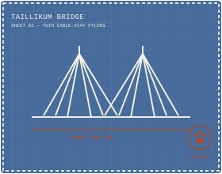
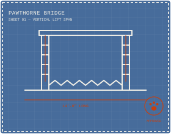
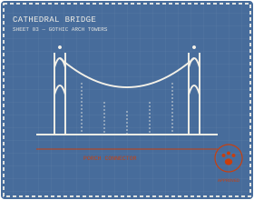

Portland, Oregon · Custom Catio Design & Build
Skybridges & catios, built like the real bridges down the street.
Thom Arboren designs and builds one-of-a-kind catios, towers, and skybridges — so your cats can safely soak up the sun outdoors, and the neighborhood birds stay safe too.

Meet the builder (and his quality-control crew)

Ten years ago, Thom's cat Princess Nell went from roaming twenty acres to pacing the window of a Portland basement apartment — and she let him know exactly how she felt about it. He built her a catio. Then a tower. Then a tunnel connecting the bedroom, office, and basement. He hasn't really stopped building since.
Today, Thom and his wife Mea run Arboren CAThedrals out of Portland, designing custom outdoor cat enclosures that keep cats safe, entertained, and (mostly) out of trouble — while keeping local birds safe from the cats, too.
His latest project, built with his in-laws David and Debbie Dicks, is a set of three Portland-bridge-inspired skybridges: the 14-foot “Pawthorne” Bridge, the “Taillikum” Bridge, and the “CAThedral” Bridge — 60 feet of connected catwalks linking two catio towers and the house, debuting on the 14th Annual Catio Tour this September in Southeast Portland.
Current crew: Princess Nell (10, chief inspector), Fezzik (14, supervisor), Earl Nimbus the Gray (4 months, apprentice), Adder & Puck (5, structural testing).
The bridges & builds
Real photos from the current project and past builds — browse the gallery below.
The “Pawthorne” Bridge
14 feet long, modeled after the Hawthorne Bridge — the first of three skybridges linking the Dicks' backyard catio towers.
The “Taillikum” Bridge
Runs along the fence line toward the back of the property, connecting one catio tower to the next.
The “CAThedral” Bridge
Closes the loop back to the porch catio — 60 feet of connected skybridge in total.
Catio Towers
Eight-foot transition towers where bridges meet, sized for climbing, lounging, and birdwatching.
Window & Door Cat-Flap Inserts
Soft flap inserts built into window frames for year-round indoor/outdoor access.
The Full Skybridge Loop
All three bridges and two towers connected into one continuous indoor-outdoor cat highway.
Real Build Photos

The finished “Pawthorne” Bridge

A closer look at the finished bridge

Bridge assembly in progress

Building the bridge deck

Tower shelves for climbing and lounging

Fitting the tower shelves

Close-up: shelf fitment detail

The back porch catio
What Thom builds
Custom Bridges & Skybridges
Elevated catwalks — from a short backyard link to multi-bridge loops — designed around your yard and your cats' favorite routes.
Catio Towers
Standalone or bridge-connected towers with platforms for climbing, sunbathing, and birdwatching from a safe height.
Window & Door Cat-Flap Inserts
Custom flap inserts built into window and door frames for year-round indoor/outdoor access.
Tunnels & Catwalks
Enclosed tunnels connecting rooms, floors, or yard structures — great for tight spaces or multi-level homes.
Fully Custom Themed Builds
Have a theme in mind? Thom loves a good pun and a good blueprint — from local landmarks to whatever your cats deserve.
Every project is different, so pricing is custom too. Contact Thom for a free consultation and quote.

As featured in
“This family built stunning replicas of Portland bridges in their backyard — exclusively for their cats.”
— Janet Eastman, The Oregonian / OregonLive, August 2026
Read the Article“As a kitten, Princess Nell lived with me on 20 acres as an indoor-outdoor cat. She was noticeably dejected after I moved into a basement apartment in Portland.”
— Janet Eastman, The Oregonian / OregonLive, August 2026
Read the ArticleCatch the “Pawthorne,” “Taillikum,” and “CAThedral” bridges in person on the 14th Annual Catio Tour, Saturday, September 12, in Southeast Portland.
Let's build something your cat will brag about
Tell Thom about your space, your cats, and your bridge-pun ideas.